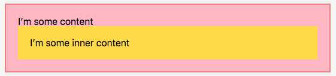
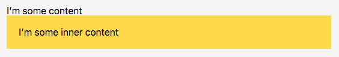
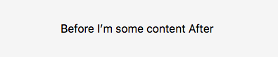
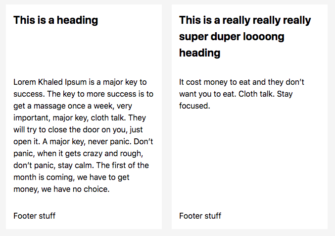
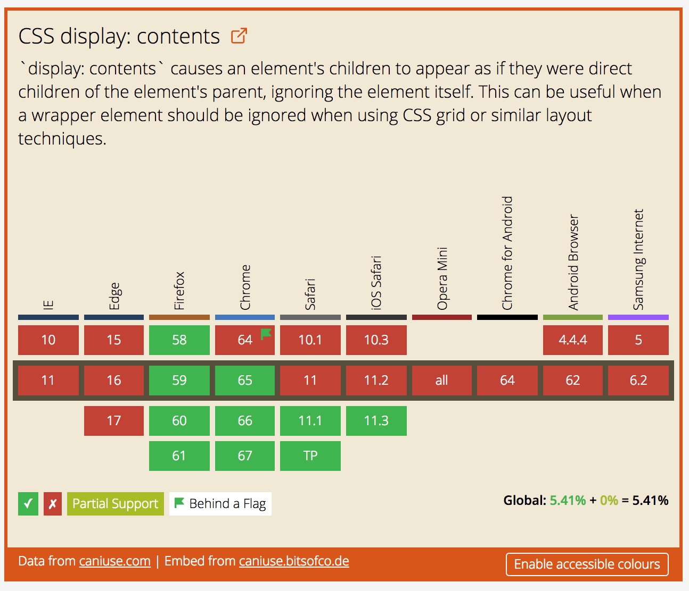

【译】display: content 是如何工作的
原文： https://bitsofco.de/how-display-contents-works/
就像经常提到的那样，每个元素在文档流中都是一个长方形的盒子，简单解释是：这个“长方形的盒子” 由两部分组成。第一部分是一个真实的盒子，由border， padding 和 margin 的区域组成。接下来一部分是盒子的内容区域。

CSS display 属性可以让我们去控制如何在这个盒子中及它的子元素在页面上的排列，我们可以用inline 属性使这个盒子和兄弟元素在同一行，也可以用 table 属性使其呈现表格的状态，我们甚至可以用 absolute 属性，在不同事物 Z 轴上堆叠这个盒子。
display 属性有两个可能值可以控制并标记指定的元素生成方框。none 值 会使盒子和内容都不在页面中绘制。另一方面，content 值是一个新的特性，盒子中的文本将会被正常绘制，而围绕在盒子中的框并不会生成。
当你用了display: content 会发生什么？
简单理解就是： 用display: content 的时候，想象这个元素标记的开始和结束标签都消失。
w3c 规范中说道：
For the purposes of box generation and layout, the element must be treated as if it had been replaced in the element tree by its contents
举个例子，如下：
<div class="outer">
I’m some content
<div class="inner">I’m some inner content</div>
</div>
对应的CSS样式为：
.outer {
border: 2px solid lightcoral;
background-color: lightpink;
padding: 20px;
}
.inner {
background-color: #ffdb3a;
padding: 20px;
}
通常情况，我们以为元素在页面中的绘制是这样的：

然而，如果我们在 .outer 元素上 加上了 display: content，它的展示效果为：

从视觉效果上来说，上面的结果和我们预期的去掉外围元素的开始和结束标签
显示的效果一样。
I’m some content
<div class="inner">I’m some inner content</div>
举几个例子
这个CSS规则虽然看似简单，但有很多边缘case和特定行为需要注意。我们需要记住，display：contents 规则仅影响在页面上可视化绘制的盒子，它不会影响文档流中的标签。
在元素的属性中的应用
如果这个元素通过其内容被有效替换，那么对应用于它的一些属性的意义是什么？由于这个替换大部分是可视化的，我们使用它的属性进行 选择，定位和与其元素进行交互。
我们可以始终通过ID 定位这个元素，例如，用 aria-labelledby 做引用：
<div id="label" style="display: contents;">Label here!</div>
<button aria-labelledby="label"><button>
但是，发现还有一种情况无法正常工作，那就是不能用片段标识符（fragment identifier）去导航到这个元素。
<div id="target" style="display: contents;">Target Content</div>
<script>
window.location.hash = "target";
// => Nothing happens
</script>
在Javascript 事件中的应用
正如我们刚刚介绍的，我们还是对其使用 display: content 。事实上，我们也可以用 display: none ，当使用 display: none 时我们无法与元素进行交互，因此该事件不能被触发。但是，由于具有 display: centent 的元素的内容是一直可见的，我们可以通过元素的内容与其元素进行交互。
<div class="outer">I’m some content</div>
<script>
document.querySelector(".outer").addEventListener("click", function(event) {
console.log(this);
// => <div class="outer"></div>
});
</script>
在伪元素中的应用
有 display: content 的元素的伪元素，被认为是其子元素的一部分，因此展示是正常的。
<style>
.outer { display: contents; }
.outer::before { content: "Before" }
.outer::after { content: "After" }
</style>
<div class="outer">I’m some content</div>
上面的代码运行效果为：

在表单元素，图像和可替换元素中的应用
当display: content 被应用时，可替换元素与一些表单具有不同的行为。
可替换元素
可替换元素也是元素，例如图像，其外观和“框”由外部资源控制。 试图删除这样元素的元素框并没有什么意义，因为它不完全清楚“盒子”是什么。 对于这些元素，display: content 的功能与display: none完全相同。元素的整个框和内容都没有绘制在页面上。
译者注： CSS 里，可替换元素（replaced element）的展现不是由CSS来控制的。这些元素是一类 外观渲染独立于CSS的外部对象。 典型的可替换元素有 <img>、 <object>、 <video>和 表单元素，如<textarea>、 <input> 。 某些元素只在一些特殊情况下表现为可替换元素，例如 <audio>和<canvas>。
表单元素
对于很多表单元素来说，它们并不是有一个“盒子“构成。但是从网页开发者的角度上，它们就是像一个盒子一样，但是事实上，它们是由几个较小的原件组件，与被替换的元素类似，由于这个框是不存在的，所以删除这个盒子是没有意义的。因此对于 <select>，<input> <textarea> 这些表单元素，display: centent 的功能与display: none 是相同的。
（参阅 display:centent 工作原理的完整列表）
按钮和链接呢
当设置成 display:centent 时， <button> 和<a>元素都没有任何特殊的行为。不过，了解这条规则对它们的影响还是有用的，因为它的作用不是很显而易见。
按钮
按钮是无其它的”框“组成的的表单元素之一。因此 display:content 只会删除周围的框，而只展示显示的按钮的内容。如果在表单中使用，点击按钮仍会尝试提交表单，正如我们介绍的那样，按钮上的任何事件监听器都将正常工作。
链接
对于链接，相同点也是视觉上删除周围的框，将链接的内容留下来。由于属性并不受此CSS规则的影响，因此该链接仍然可以正常运行，并且用于正常导航。
为什么display: centent 会有用
在此之前，我们不得不用一种更符合语义的方式来布局我们的HTML —— 使用CSS去进行样式设计。这导致我们要么包裹太多没必要的元素，要么用很少的元素去直接使用兄弟样式。后者与引入 CSS Grid Layout 很有关系，至少目前它需要使用直接的兄弟元素去实现。
举个例子， 我们看一下这个布局：

我们有两张彼此相邻的卡片，它们都有一个标题头部，一个段落和一个页脚。如果我们想要这两个相邻的卡片的每个部分都是相同的高度，而不管每个部分的内容如何（例如：第一张卡片只有一行标题，而第三张卡片有三行标题，但是第一张卡片的标题部分的高度应该与第三张卡片的高度一致）
我们可以使用 CSS Grid 完成这个布局，因此我们需要将卡内所有的元素都变为兄弟元素，因此我们可能需要这样布局我们的HTML：
<div class="grid">
<h2>This is a heading</h2>
<p>...</p>
<p>Footer stuff</p>
<h2>This is a really really really super duper loooong heading</h2>
<p>...</p>
<p>Footer stuff</p>
</div>
对应的CSS 为：
.grid {
display: grid;
grid-auto-flow: column;
grid-template-rows: auto 1fr auto;
grid-template-columns: repeat(2, 1fr);
grid-column-gap: 20px;
}
虽然对于构建文档来说，这并没有什么不正确的地方，但将 <article> 元素中的卡片分组显得更有意义。这里用到 display: content，我们能够同时使用个两全其美的方案 - 通过在更语义化的方式来布局这些标签，让CSS的布局更合理。
<div class="grid">
<article style="display: contents;">
<h2>This is a heading</h2>
<p>...</p>
<p>Footer stuff</p>
</article>
<article style="display: contents;">
<h2>This is a really really really super duper loooong heading</h2>
<p>...</p>
<p>Footer stuff</p>
</article>
</div>
和上面相同的CSS， 我们可以实现当前想要的布局。
display: content 的支持程度
在撰写本文时，display: content 仅在两个主流浏览器中得到支持，其他支持很快就会到来。

因此，此功能目前仍应被视为渐进式增强功能，并应使用适当的降级方案。
article {
display: grid;
grid-template-rows: 200px 1fr auto; /* e.g. Use a fixed height for the header */
}
@supports (display: contents) {
article { display: contents; }
}